Eliminations
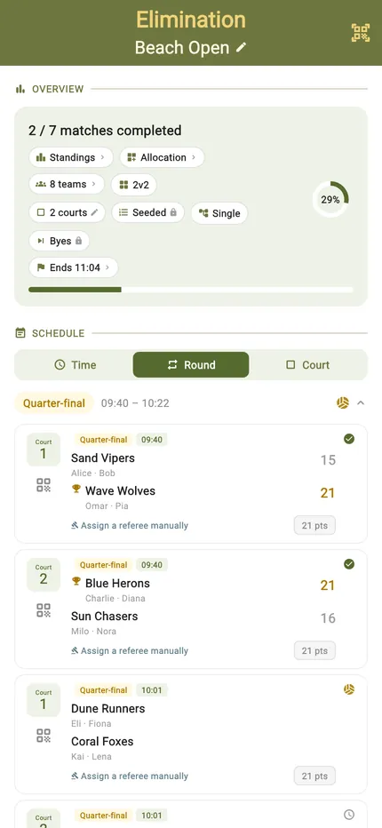
The cleanest format there is: win and you go through, lose and you are done. Quarter-final to final in one tree that fills itself in as results land, so everyone can see exactly what they have to do next.
Choose double elimination and a first loss is not the end — it drops a team into a losers bracket, with a route back to a grand final. Same setup, same scorecard, one extra life.
Best for
- Events with a title at the end and limited time to decide it
- Fields where a seeded draw matters and the strongest teams should meet late
- Doubles: giving everyone a second chance without doubling the schedule
Finding it in the app
Eliminations live under Team Competitions in the TournaQ Arena. Single and double elimination are the same mode, chosen at setup.

The Arena
Every format the app can run, grouped by the kind of session it suits. The number on a card is how many of those you have run.
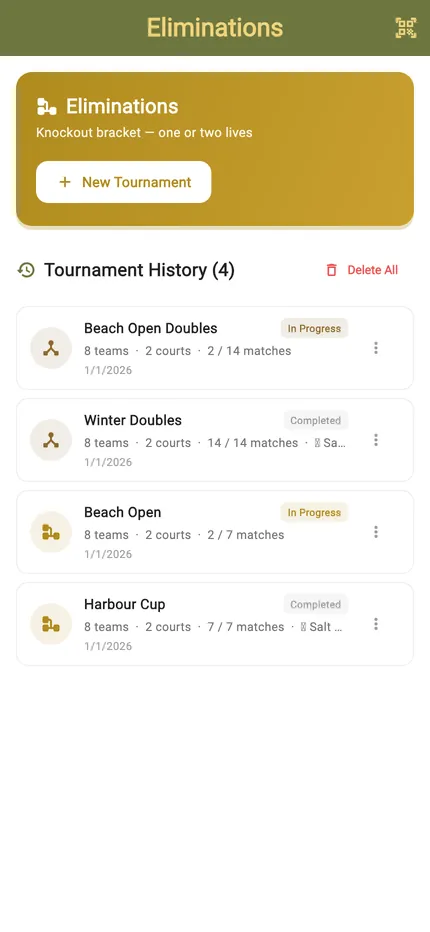
The Eliminations hub
New Tournament starts a bracket. Below it sits your history, each entry showing the date, the team count and how far it got.
One loss and you are out
The bracket is the format. Quarter-final on the left, final on the right, and every result pushing a team one step closer to it.
The draw, filling itself in
Teams enter on the left and the winners advance as results come in. Slots that are still undecided read TBD, so at any moment the tree shows exactly what is settled and what is not — which is the thing a printed bracket on a wall can never keep up with.

Or give everyone a second chance
Double elimination runs two brackets at once. Lose in the winners bracket and you drop into the losers bracket rather than out of the event.
Winners, losers, grand final
The two halves run in parallel and converge on a grand final, so a team that lost early can still play its way back. It costs more matches than a straight knockout and delivers a fairer winner — which is the trade you are making when you pick it at setup.
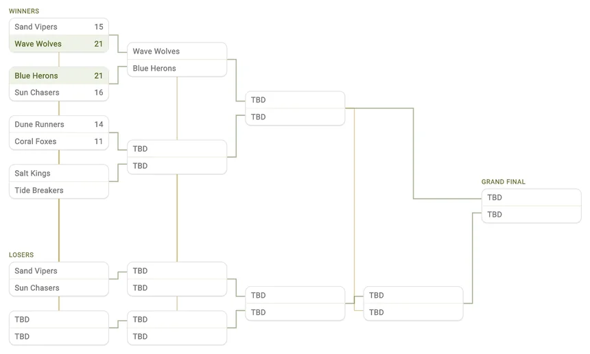
Setting it up
Add the teams, choose one life or two, and TournaQ builds the draw — byes included, where the field does not divide evenly.
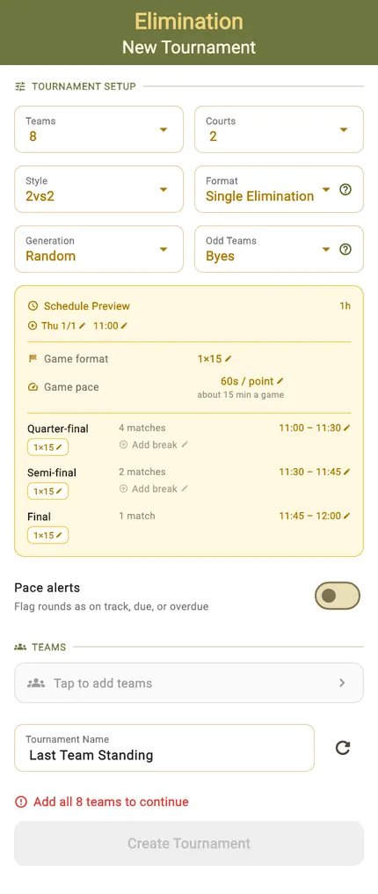
Teams, seeding, lives
Team count, courts, match format, and whether a first loss ends the event. Seeding decides who meets whom, so the strongest teams do not knock each other out in round one.
Where the field is not a power of two, TournaQ works out the byes rather than making you draw them on paper.
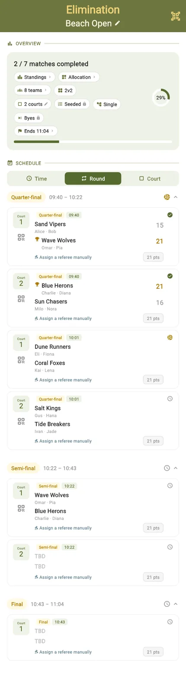
The draw it produced
Before a point is played you can see the whole bracket — every first-round pairing, every bye, and the path each team would take to the final.
Running the bracket
Round by round, or court by court — whichever matches how the day is actually being run.
The bracket, live
Standings and the tree update as results land, with the progress ring showing how much of the draw has been decided.
By court
The same matches regrouped so each court lists its own sequence — the view to hand someone running one court all day.
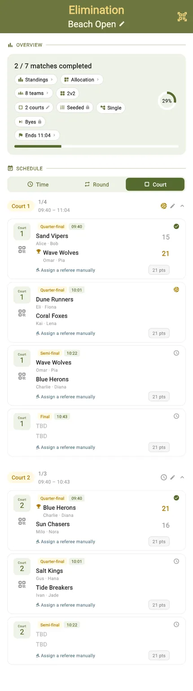
Who is on which court
The allocation grid lays the rounds against the courts, so you can see where the bottleneck is before it becomes one.
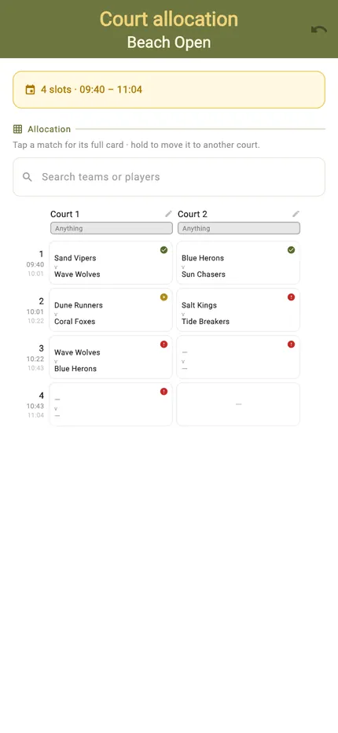
Scoring a match
The same scorecard as everywhere else, and the same escape hatch when a match was played while you were looking the other way.
Portrait
Tap a side to award the point. The server is highlighted and service passes automatically when the other side scores.
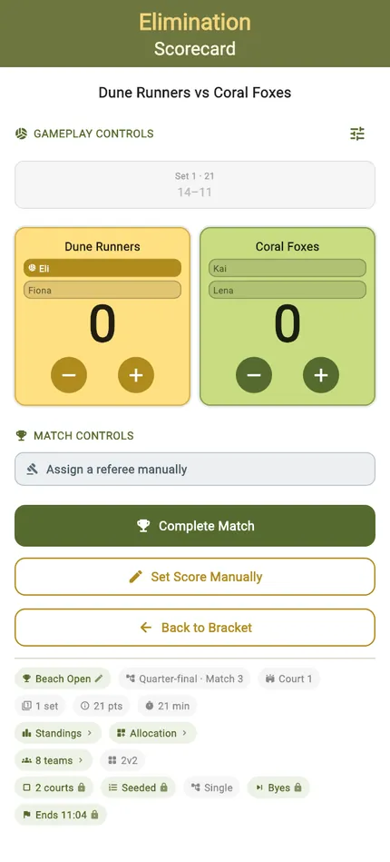
Landscape
Turn the phone and the controls rearrange for a net post or a side table. The layout changes, the functions do not.
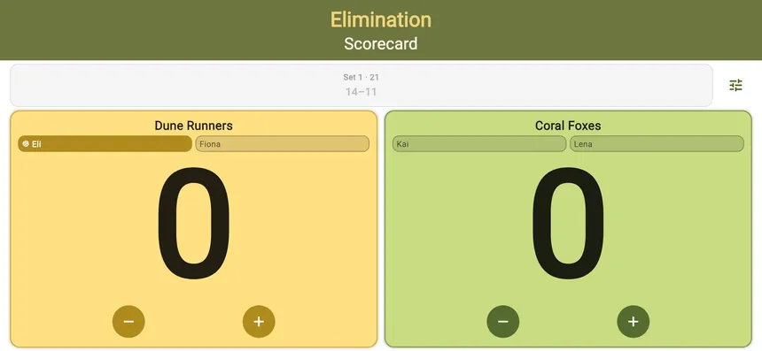
Or enter the result
Type the final score straight in and the bracket advances exactly as if you had tapped through every rally.

Deciding it
The bracket resolves itself. When the final is played there is nothing to calculate — the tree already says who won.
Standings alongside
A table view sits next to the tree for anyone who would rather read a list than follow lines across a screen.
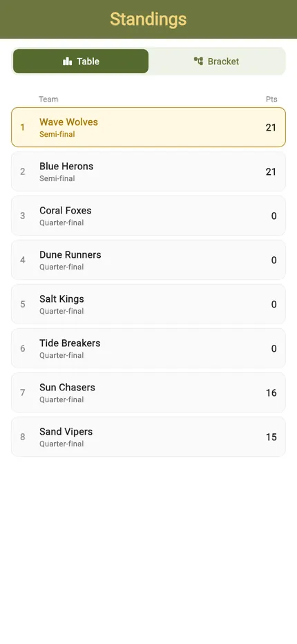
The completed bracket
Every match played and every result in place, from the first round through to the final.
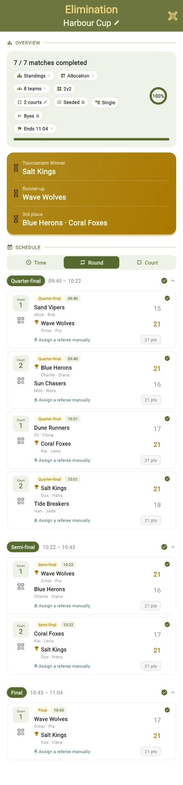
Final standings
The closing order, with the winner at the top and everyone placed by how far they got.
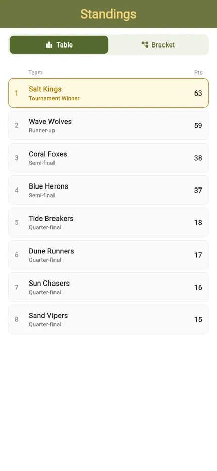
Reusing and sharing it
A bracket you run every month is worth keeping, and a result scored on someone else's phone is worth taking back.
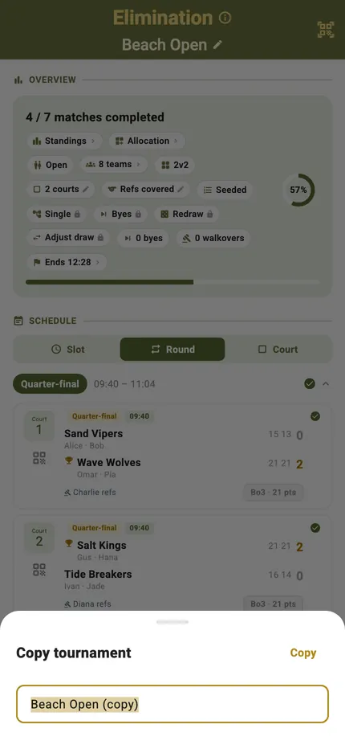
Run it again next time
Copy a tournament and you get its settings, its courts and its format as a fresh event — so the monthly open takes a minute to set up rather than a rebuild from scratch.

Scores from another phone
A scorecard scored on someone else's device arrives marked as imported, so a bracket run across two phones can be folded back into one.
Start to finish
- Open the TournaQ Arena and pick Eliminations.
- Tap New Tournament.
- Add the teams, set the courts and match format, and choose single or double elimination.
- Seed the draw if it matters who meets whom.
- Check the generated bracket, byes included.
- Name the event and tap Create Tournament.
- Open the first match and score it — or enter the result directly.
- Winners advance automatically; in double elimination, losers drop to the second bracket.
- Play through to the final and read the final standings.
- Copy the tournament if you want to run the same event again.
Have a question about Eliminations, spotted something missing, or want to suggest an improvement?